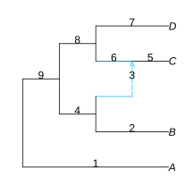
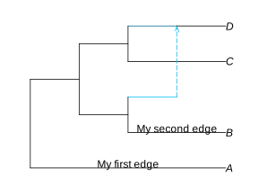
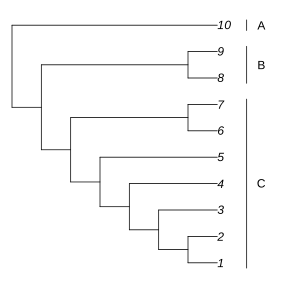

Adding data
In this section, we will look over ways of adding extra information or data to a plot.
Adding labels
For demonstration purposes, I will walk through the process of adding labels to edges, with notes on how to do the same for nodes in parentheses.
To add labels on edges (or nodes), we need to know their numbers. We can use the showEdgeNumbers = true option for this. (Use showNodeNumbers = true to see node numbers).
plot(net, :R, showEdgeNumber=true);
We will need to define a DataFrame with two columns of information: the number of the edge (or node), and the label that goes on it, like this:
| Number | Label |
|---|---|
| 1 | "My first edge" |
| 2 | "My second edge" |
After including the DataFrames package, we can define it as so:
julia> using DataFramesjulia> DataFrame(Number=[1, 2], Label=["My first edge", "My second edge"])2×2 DataFrame Row │ Number Label │ Int64 String ─────┼──────────────────────── 1 │ 1 My first edge 2 │ 2 My second edge
Using this dataframe as input to the edgeLabel (nodeLabel for nodes) option puts the text on the correct edges:
plot(net, :R, edgeLabel=DataFrame(Number=[1, 2], Label=["My first edge", "My second edge"]));
Adding other data using R
We can use the return values of plot to get some information on the coordinates of different elements of the plot. Using this, we can add any other information we want.
The plot function returns the following tuple:
(xmin, xmax, ymin, ymax, node_x, node_y, node_yB, node_yE,
edge_xB, edge_xE, edge_yB, edge_yE, ndf, edf)See the documentation for descriptions on every element: plot
Side clade bars example
Here's some example code that adds bars to denote clades in the margin:
net = readTopology("(((((((1,2),3),4),5),(6,7)),(8,9)),10);");
plot(net, :R, xlim=(1, 10))
R"segments"([9, 9, 9], [0.8, 7.8, 9.8], [9, 9, 9], [7.2, 9.2, 10.2])
R"text"([9.5, 9.5, 9.5], [4, 8.5, 10], ["C", "B", "A"])
Let's break this down step by step. First, we read the topology, and plot the graph normally. plot actually returns a value, from which we can get useful information. Below, we store the plot output in res, then check its first two values because they contain the default range of the x axis; xmin and xmax.
res = plot(net, :R);
res[1:2](0.29999999999999993, 8.77)Looking at xmin and xmax returned by default, we can see that the x range is about (0.3, 9). To give us extra space to work with, we can set xlim to (1,10), forcing the range to be wider.
plot(net, :R, xlim=(1, 10));Knowing the coordinates, we can now add more information to the plot through RCall. For this, I use the segments and text functions to add side bars with text on them.
R"segments"([9, 9, 9], [0.8, 7.8, 9.8], [9, 9, 9], [7.2, 9.2, 10.2])
R"text"([9.5, 9.5, 9.5], [4, 8.5, 10], ["C", "B", "A"])